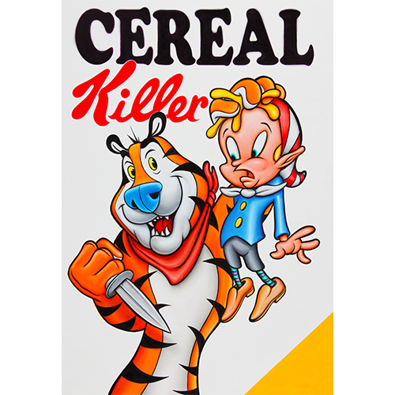
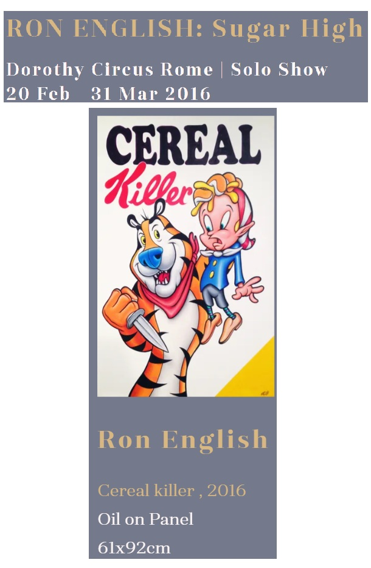
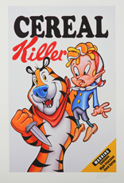
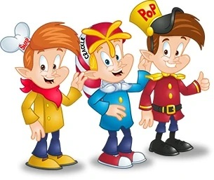

Exhibitions
Sugar High, Dorothy Circus Gallery, Rome, Italy, February 20–March 31, 2016.
Literature
Ron English, Ron English’s Stickable Art Offenses: A Sticker Book, designed by Randy Johnson (San Francisco: Last Gasp, 2011), 100 pp. ISBN 978-0867197594.
Notes
Dorothy Circus Gallery documents this work as Cereal killer, 2016, oil on panel, 61 × 92 cm, under RON ENGLISH: Sugar High. This catalogue retains the 2010 date, oil on canvas medium, and 24 × 36 inch dimensions based on the catalogue metadata and the work’s inclusion in Ron English’s Stickable Art Offenses, published in 2011.
A related archival pigment print titled Cereal Killer is documented on Artsy as a 2011 print, signed and numbered from an edition of 50 in pencil, with sheet size 38.5 × 26.5 cm. Because the generic signature field on the same page reads “Not signed,” this entry attributes the signature wording to the listing rather than presenting it as fully settled.
This work references Tony the Tiger, the advertising cartoon mascot for Kellogg’s Frosted Flakes.
This work also references Crackle, one of Snap, Crackle and Pop, the cartoon mascots of Kellogg’s Rice Krispies.
Ancillary Documentation




Selected Online Circulation
Selected examples of the work’s online circulation, reproduction, or discussion. This list is not exhaustive; it is intended to document representative appearances of the image beyond formal exhibition and publication records.